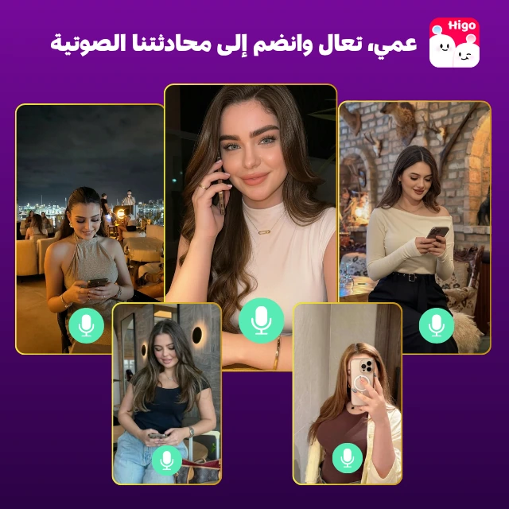

组织视觉层级
围绕人物、社交场景与产品画面安排构图，把核心信息和下载引导放在易识别的位置。
COMMERCIAL PRACTICE / 海外广告
面向中东与土耳其市场的社交产品，参与静态广告与短视频素材制作。把人物、产品信息与行动引导组织成清晰的广告表达，并与投放团队协作迭代。

MY CONTRIBUTION
围绕人物、社交场景与产品画面安排构图，把核心信息和下载引导放在易识别的位置。
参与口播二剪与社交短视频制作，处理开场节奏、字幕、产品信息和结尾行动引导。
根据投放反馈调整素材形式与表现方式，完成不同画幅适配，配合团队持续更新创意。
VIDEO CREATIVE
Higo · 口播二剪展示（2026.08.12）
Habi · 猫 POV 内容形式
Higo · 搞笑人物与轮播内容
各视频对应不同产品或内容形式；不将它们视为同一受众下的对照实验。
CREATIVE PERFORMANCE
截图展示的是口播素材 17 和 27 的历史投放记录；上方新增的口播二剪视频为另一条素材，不使用这些数据说明其表现。可点击截图放大，或打开原图。
REFLECTION
广告素材需要兼顾吸引注意与信息理解。人物和情绪提供入口，产品画面与行动引导承接下一步，两者之间的顺序与节奏需要在制作中反复检查。
复盘时先确认素材编号、市场和时间范围，再比较具体表现。下一轮迭代应围绕开场、信息顺序或 CTA 等明确变量展开，便于解释改变带来的反馈。